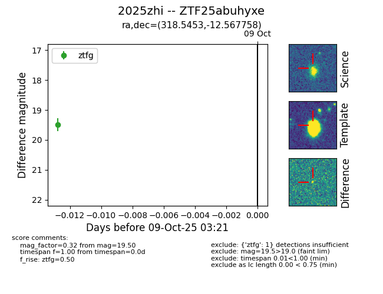

FINK: ZTF25abuhyxe
Lasair: ZTF25abuhyxe
ALeRCE: ZTF25abuhyxe
TNS: 2025zhi
YSE: 2025zhi
ZTF25abuhyxe (ztf,fink)
2025zhi (tns,yse)
equatorial (ra, dec) = (318.5453,-12.56776)
galactic (l, b) = (37.6884,-37.29693)

last ztfg=19.50
1 ztfg detections